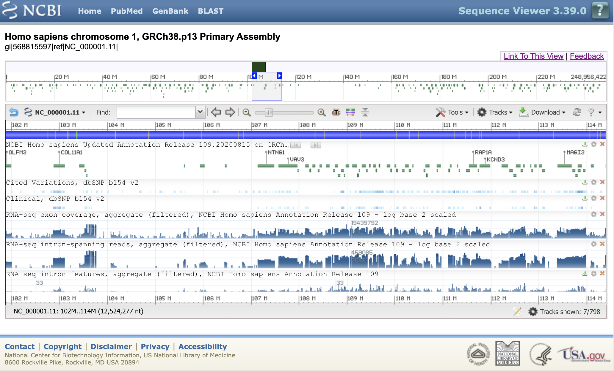
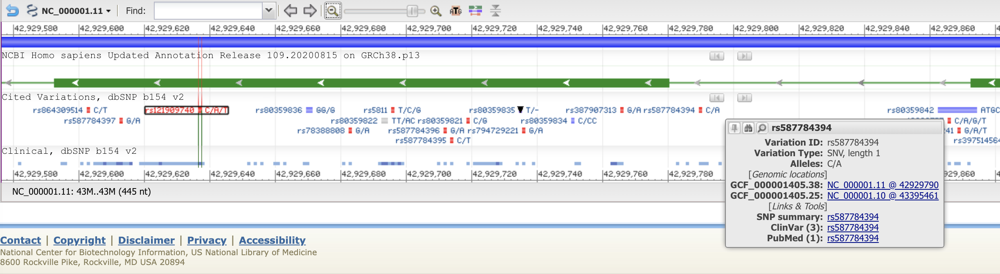
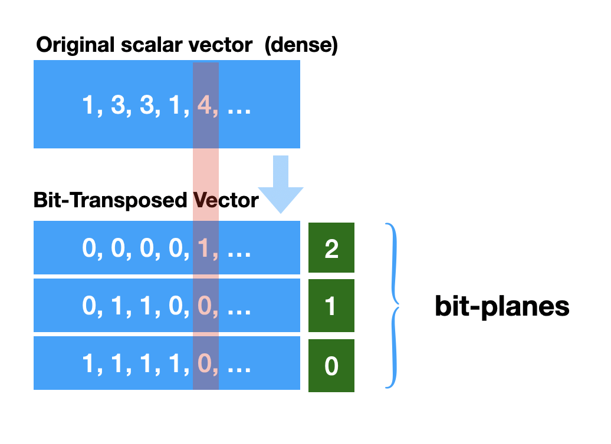
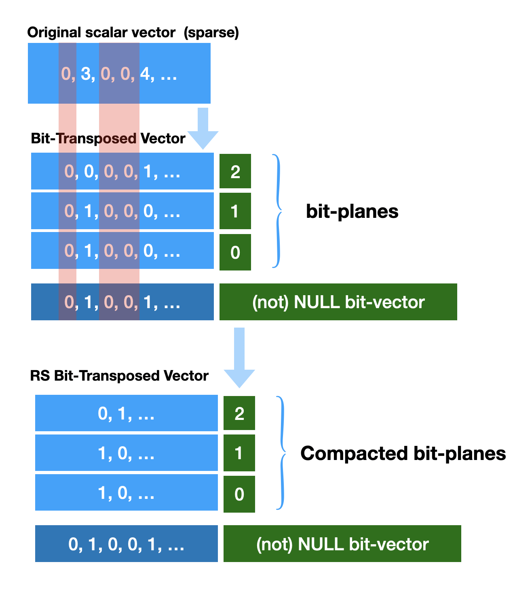
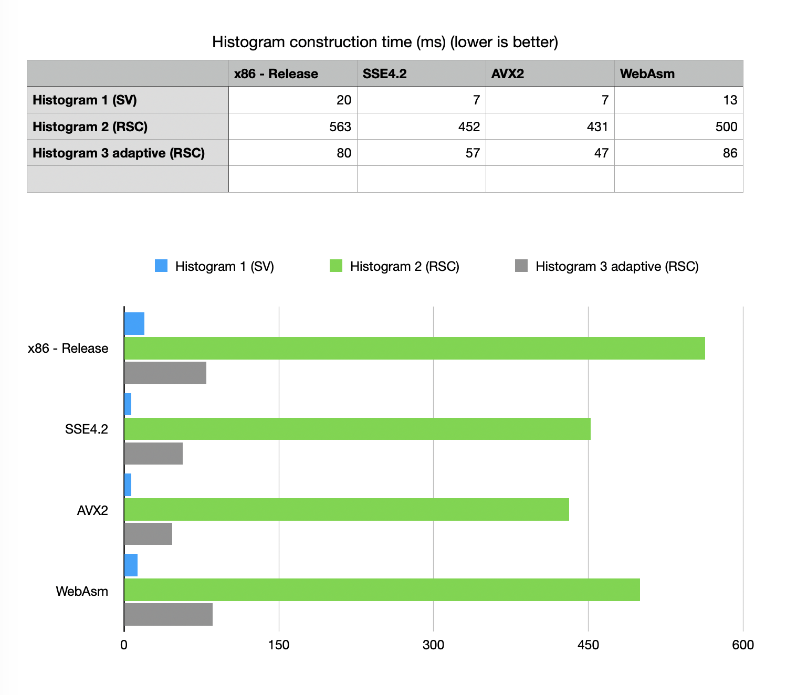
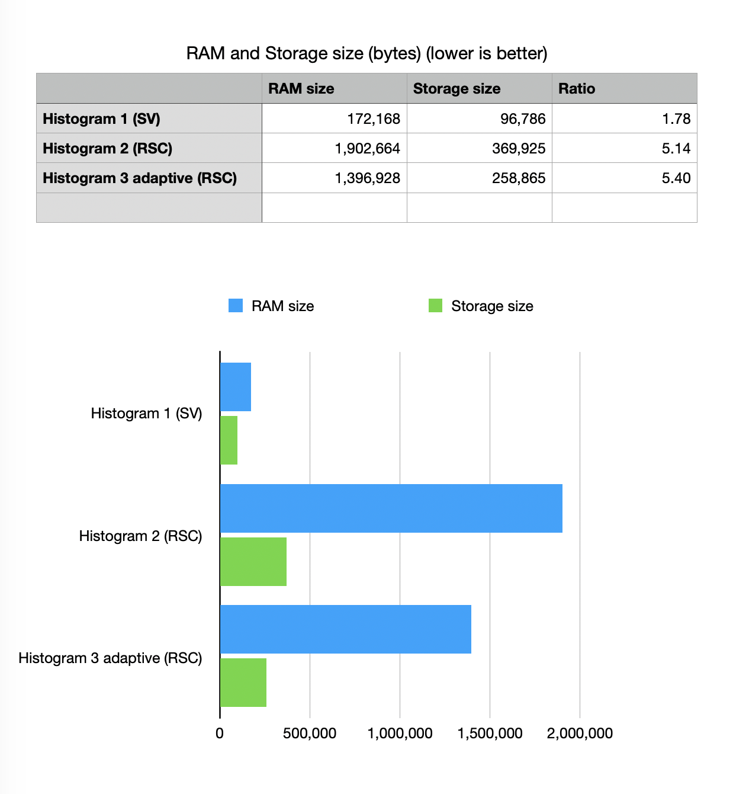

Construction of memory compact histograms
Anatoliy Kuznetsov. Oct 2020 (based on BM v.7.3.0+)Introduction
This is an attempt to revisit the use-case of construction and storing histograms as memory compact structures. Histograms, graphs and heat maps have tremendous utility in analysis and visualization of scientific data, data science, construction of database and planning of parallel algorithm. Here we will try to benchmark latest BitMagic v.7.3.0 regarding construction of various types of memory compact histograms, measuring construction and random access performance, memory consumption and compression efficiency. Benchmarking will demo various techniques with BitMagic library, show case performance in portable mode, SIMD (SSE4.2, AVX2/BMI2) and WebAssembly.
Use case example: visualization of variations (bioinformatics)
 
The screenshot below shows an example of NCBI genomic viewer displaying various graphs as heat maps / histograms over the genomic range of human chromosome 1.
In this use case analysis we will try to we will try to benchmark performance and memory characteristics of histogram construction for test data which would simulate DNA mutation events (variations) over the span of chr1 to construct and store histograms using BitMagic memmory compact containers.
Memory compact structures (succinct vectors)
Genomic events like mutations are moderately rare but sheer number of genomic information today asks for efficient containers to store and manipulate the data. In this use case study we generate pseudo-random events for a data set of approximately chr1 size peppering it with random events(to simulate SNPs) stored as bit-transposed rank-select compressed vector. All the events are using true target vector (genomic) coordinates (coordinates on chr1). Generated test container will be used to compute histograms.

Bit-transposed rank-select compressed vector deserves a bit of an explanation. Bit-transposed structures also known as bit-plane compression or bit-slicing is a memory compaction technique, where the bit-transposed data has higher inherent compressibility. Bit-plane transformation rotates input integers such that each of its output symbol includes one bit of every input number, all at the same bit position.
It is important that the case in question is sparse, recorded events are NOT happening in each and every position (logical genomic coordinate in our case). Certain position will always be empty (zeroes). We can choose to keep one additional bit-plane (bit-vector) recording presence/absence of value (NULL bit-vector). Now when we know presence-absence information we can compress al bit-plane vectors into more dense vectors by removing all columns which we know are NULL (‘0’). Please note that the NOT NULL bit-vector is kept as an “address structure”. BitMagic implements index accelerated Rank-Select operation on bit-vectors (with some computational penalty) to keep data succinct in memory yet provide (almost)random access to elements using logical index/coordinates.

BitMagic implements a special STL-like vector class for integer data
(bm::rsc_sparse_vector<>) which makes all coordinate compute magic
transparent, keeps things under the hood and looks (almost) like an STL vector.
The randomized benchmark data for this test are generated as
bm::rsc_sparse_vector<> using back_insert_iterator
for fast container construction).
Histogram/heat map construction
In this case study we will explore three variants of histogram construction.
Fixed step discretization of the input set, where we use bit-counting to fill the histogram bins. As a discretization parameter we would use 2500 (number of base pairs) to compute number of variations. For simplicity we assume variations are unique to positions on the genome (not true in real life data sets). Histogram construction algorithm is quite simple, all we need to do is to go over the NULL bit-vector to compute population count for all the ranges.
All the values are then fed into bm::sparse_vector<> (bit-transposed sparse vector). The name “sparse” is a bit misleading here, because we would use this vector as a “dense” in terms of its address space (every element would contain a valid value, no NULLs expected). Just bit-transposed for compactness. Bit transposition is beneficial, because the fixed range of 2500 can only contain 2500 events (0b100111000100) which means we need only 12 bits to keep it but not 16 as use of natural type “short unsigned int” would require otherwise.
void compute_historgam(sparse_vector_u32& hist_sv,
const rsc_sparse_vector_u32& csv,
sparse_vector_u32::size_type sampling_size)
{
BM_DECLARE_TEMP_BLOCK(tb)
sparse_vector_u32::size_type from = 0;
sparse_vector_u32::size_type to = sampling_size-1;
// get NOT NULL vector
const rsc_sparse_vector_u32::bvector_type* bv_null = csv.get_null_bvector();
assert(bv_null);
{
auto bit = hist_sv.get_back_inserter();
auto sz = csv.size();
do
{
auto cnt = bv_null->count_range(from, to); // closed interval [from..to]
bit = cnt;
from += sampling_size;
to = from + sampling_size - 1;
} while (from < sz);
bit.flush();
}
hist_sv.optimize(tb); // memory compaction
}
Second variant of histogram construction is basically the same, except that we now try to keep histogram bits in the natural coordinates of the data vector (genomic coordinates). It means each histogram bin would be logically placed at the start coordinate of its respective range [start..end]. Why would you do that? There are couple of reasons to explore. One is that keeping all vectors in one system of logical coordinates is neat concept, makes program somewhat simpler. Another consideration is to make a step from fixed step discretization to adaptive discretization, where we can vary ranges and keep proportional to certain number of events (not NULL values). Histogram 2 uses Rank/Select Compressed sparse vector (RSC vector) to keep population counts.
Histogram 3 uses adaptive discretization. It fixes the desired population count
of events(that would be our desired rank based on average)
to run a ranking algorithm (bm::rank_range_split<> )
to markup the chr1 space as a collection of ranges:
[start1…end1], [start2…end2], [startN…endN]
The result again is kept as an RSC vector (just as the original data),
which is a stepping stone for more advanced discretization
which would vary both population and range within certain boundaries
(lets keep it as follow up work). Histograms and heat maps are often
rendered approximately and knowing the population count and histogram range
we can trivially compute average density as (events per base coordinate)
normalize and show it as a heat map or a histogram.
Please note that Histogram 3 uses RSC to store the values,
but those values are all effectively the same (event population rank) so
when evaluating access we don’t even read it, instead we
are finding the histogram range boundaries using NOT NULL bit-vector and
methods bm::bvector::find() and
bm::bvector<>::find_reverse().
The total population count in all ranges is the same (rank).
Benchmarks
- Histogram construction time
- Memory consumption (RAM) of succinct containers
- Serialized compressed size (disk / network)
- Element random access time
All the performance numbers were collected with 3.2 GHz Quad-Core Intel Core i5 running MacOS 10.15.6. The speed benchmarks are collected using regular x86 configuration (no SIMD accelerations, SSE4.2 (uses hardware POPCNT), AVX2 (uses POPCNT, BMI1, BMI2) and WebAssembly compiled to support hardware POCNT run in Google Chrome version 85.0.4183.121 (Official Build) (64-bit).
RAM consumption is collected using BitMagic container calc_stat() method. Unlike many other libraries BitMagic can benchmark its in-memory consumption on the level of individual containers (try that for STL map<>). This can be used dynamically for diagnostics and profiling and to budget and manage memory. For example evict least used objects to disk when overall consumption reaches certain threshold.
Sample output
Data set size: 416666678 Number of elements/events in the data set: 39213161 Histogram 1 (SV) size: 166667 RAM size: 172168 file size: 96786 Histogram 2 (RSC) size: 416665001 NOT NULL count: 166667 RAM size: 1902664 file size: 369925 Histogram 3 adaptive (RSC) size: 416665661 NOT NULL count: 166865 RAM size: 1411184 file size: 258936 Access sample size = 1960963 01. Histogram 1 construction (SV)) ; 7.24725 ms 02. Histogram 2 construction (RSC) ; 431.221 ms 03. Histogram 3 (adaptive) construction (RSC) ; 47.979 ms 04. Verification; 29.986 ms 05. Serialize and save the histogram 1 (SV); 2.01143 ms 06. Serialize and save histogram 2(RSC); 5.37974 ms 07. Serialize and save the adaptive histogram 3 (RSC); 4.54179 ms 08. Random access test H1 (SV); 87.4858 ms 09. Random access test H2 (RSC); 118.832 ms 10. Random access test H3 adaptive (RSC); 47.927 ms
Histogram construction time
 Construction time test is very dependent on our ability to do fast population count (POPCNT), so vectorized versions show clear advantage. Interestingly WebAssembly build works faster that native non-accelerated portable build, because again WebAssembly JIT compiled into native code with HW accelerated POPCNT. SSE4.2 vs AVX2 show little difference. All algorithms (even the slowest H2-RSC) are within boundaries of “good enough” - interactive in all variants of build.
RAM and Storage size
 Before looking at numbers here we should estimate how much the histogram data would take if we do not do any compression. if we take 166667 sampling points and use dense histogram model we would be looking at 333334 bytes (using 16-bit unsigned short). For a sparse sampling model we would need to keep coordinates of the bins (in native coordinate space and thus we would need another 666668 bytes using 32-bit unsigned int). Total: 1000002 bytes. Please note that H2 RSC RAM consumption actually worse than a simple two plain arrays model in this particular distribution (there are ideas on why is that and how to fix it) but serialized footprint is still significantly better than conventional sparse vector estimate.
Compression of sparse vectors uses Binary Interpolated Coding with a XOR filter described in more details: here The best contender here is Histogram1 (dense bit-transposed succinct vector).
Random access test
 Random access speed is the most frequently asked question when it comes to succinct data structures.
Very often the concern is that it should be prohibitively slow. BitMagic offers various “bulk” methods
to gather data from memory compact vectors and bulk extraction (de-transposition) can be well optimized
to use memory locality and L1-L2 cache reuse.
Random access speed is the most frequently asked question when it comes to succinct data structures.
Very often the concern is that it should be prohibitively slow. BitMagic offers various “bulk” methods
to gather data from memory compact vectors and bulk extraction (de-transposition) can be well optimized
to use memory locality and L1-L2 cache reuse.
Random access is a true test for memory latency and algorithmic complexity, we need to visit multiple memory locations in planes to reconstruct vector elements. It is important to understand the worst case scenario.
Our benchmark sample uses 1961594 native coordinates. For H1 SV test it computes the coordinate of our bin using integer division (something easy to optimize more if discretization step is chosen as a power of 2).
For RSC tests it locates the interval using bm::bvector<>::find_reverse().
AVX2/BMI2 version wins in all categories.
WebAsm here is slower but not prohibitevely slow.
WebAsm while being slowest deserves a special mention. As a platform it benefits from use of compressed and succinct methods the most, because of the constant memory pressure, associated with the operation in the browser and because in-browser applications often needs to transfer data over the slow public networks, where higher compression rates show distinct advantage. Holistic optimization with the goal to trade memory and transfer speed for CPU costs wins here. In the future when SIMD becomes available in WebASM it should be possible to have better performance.
All methods and build variants show numbers sufficient for interactive visualization.
Please note, that Histogram 3 method effectively not using the whole bit-transposed array, it only reads the NOT NULL vector with better memory locality and outperforms other methods.
GitHub
Links and References
- Bit-Plane Compression: Transforming Data for Better Compression in Many-core Architectures. Jungrae Kim∗ Michael Sullivan∗∗ Esha Choukse∗ Mattan Erez∗ PDF
- BitMagic XOR compression of bit-transposed vectors
- Notes on Binary Interpolative Coding